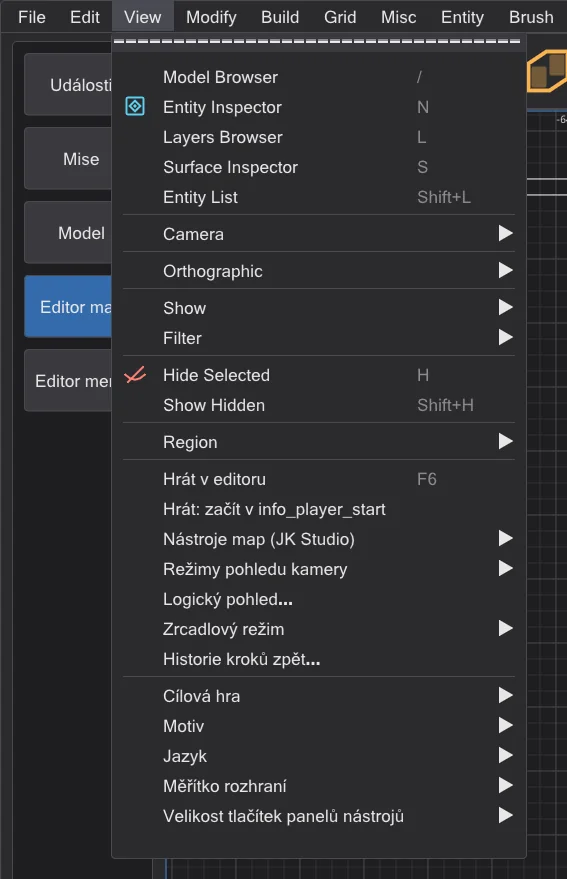
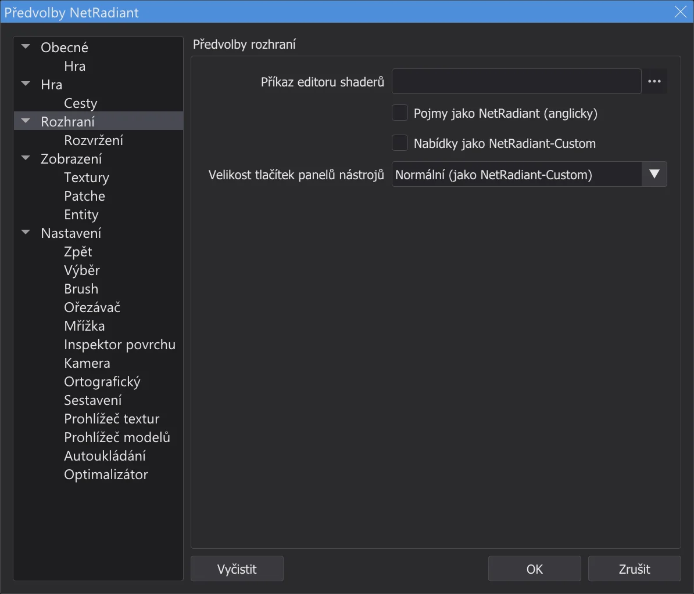
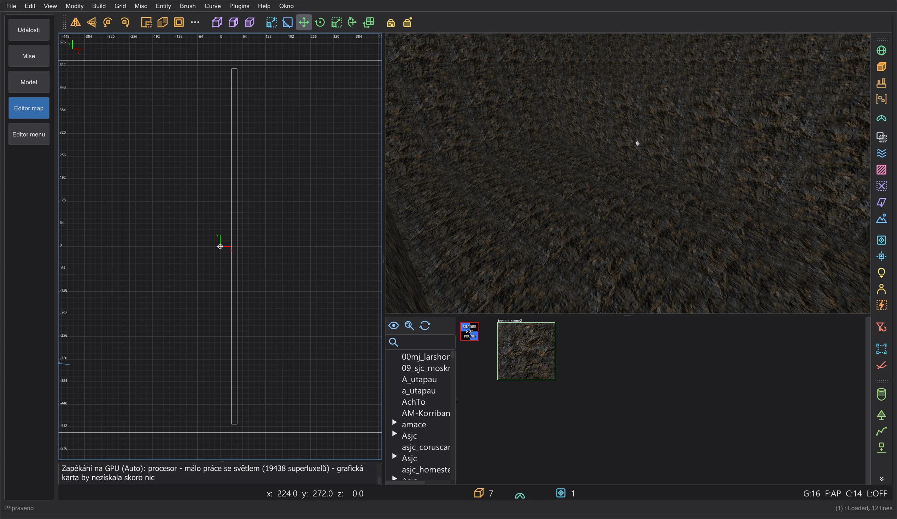

Mapa a scéna
Editor map: rozdíly oproti NetRadiant-Custom
Editor map se vzhledem a ovládáním řídí NetRadiant-Custom 20260114. Známé chyby NetRadiant-Custom, Xonotic NetRadiant, GtkRadiant a q3map2 byly zkontrolovány jedna po druhé: co JK Studio dělá jinak a co záměrně zůstává jako v NetRadiant-Custom.
Vlastní ovládání (není v NetRadiant-Custom)#
- Nabídky ve stylu JK Studia. Řádek nabídek a všechny nabídky editoru map vypadají jako nabídky zbytku programu. Položky, pořadí, podnabídky, zaškrtnutí, zkratky, mnemotechnické klávesy a co která položka dělá, jsou ty z NetRadiant-Custom. Preferences > Rozhraní > Nabídky jako NetRadiant-Custom vrátí vzhled NetRadiant-Custom.
- Menu vyšší než obrazovka. Menu s mnoha položkami (například Build s dlouhým seznamem sestavení) může být vyšší než obrazovka. Ve stylu JK Studia se pak posouvá kolečkem myši; s Nabídky jako NetRadiant-Custom se zalomí do sloupců jako v NetRadiant-Custom, takže každá položka zůstane na obrazovce; podmenu se otevře vedle svého sloupce, jako v Qt.
- Nastavení programu v Zobrazení. Na konci View: Cílová hra, Motiv, Jazyk, Měřítko rozhraní a Velikost tlačítek panelů nástrojů - se stejným účinkem jako v nabídce Zobrazení programu. Jazyk, motiv a měřítko zůstávají i na konci Misc.
- Velikost tlačítek panelů nástrojů. Malá, Normální (jako NetRadiant-Custom) nebo Velká pro hlavní panel, panel filtrů a pluginů, v Preferences > Rozhraní a v View > Velikost tlačítek panelů nástrojů. Platí hned a ukládá se; pohledy se s panely nástrojů posunou nahoru nebo dolů.
- Ctrl + kolečko myši v editoru map nemění měřítko programu: jako v NetRadiant-Custom patří kolečko pohledům (přiblížení ve 2D, pohyb v kameře, posun v prohlížeči textur), i s Ctrl. Měřítko je v View > Měřítko rozhraní.
- Název okna. V editoru map ukazuje název mapu a
*, má-li neuložené změny, jako v NetRadiant-Custom. - Vlastní funkce sestavení. Okno Průběh sestavení se zbývajícím časem, Dílčí kompilace: znovu použít VIS a Dílčí kompilace: znovu použít světlo, Přidat do zkompilované mapy (Editor map: průběh sestavení a dílčí kompilace), Zachovat data editoru, Obnovit misc_model z geometrie a Odhadnout světla (experimentální) (Zachování dat editoru) - každá s vlastní položkou nabídky nebo volbou a poznámkou "není v NetRadiant-Custom". bhed_q3map2 pro ně má přepínače
-bhedvisreuse,-bhedlightcachea-bhedmodels; bez nich sestavuje jako dřív. - Vlastní nástroje editoru (fáze 8b). Volná rozdělená okna pro rozdělené rozvržení, Hrát v editoru (F6), Logický pohled, Režimy pohledu kamery, Zrcadlový režim a Historie kroků zpět (Editor map: terén, hraní, logika, zrcadlo a další) - každý s vlastní položkou nabídky nebo volbou a poznámkou "není v NetRadiant-Custom", všechny ve výchozím stavu vypnuté. Generátor terénu pochází ze zdrojového kódu NetRadiant-Custom po vydání 20260114; jeho pevné semínko je vlastní doplněk. Obnovit misc_model z geometrie hledá ve všech složkách modelů s indexem modelů v mezipaměti. bhed_q3map2
-light -bhedgpuprovádí testy stínů na grafické kartě s bajtově shodnými výsledky, ale zůstává vypnuto (na měřeném počítači bez zisku).






Editor: opravené chyby#
| Hlášení | NetRadiant-Custom | JK Studio |
|---|---|---|
| NRC#65 | Po opuštění režimu vrcholů nebo hran zůstanou komponenty vybrané; další tažení deformuje brush. | Opuštění režimu vrcholů nebo hran zruší výběr jeho komponent. |
| NRC#302, GL#206 | Zakrytí zkosením a obráceným zkosením může podle orientace patche vytvořit dva degenerované patche. | Směr zakrytí se volí podle velikosti a tvaru, takže každé zakrytí má povrch. |
| NRC#130 | Cesta s přehláskami nebo jinými znaky mimo ASCII: mapa se neotevře, nastavení se poškodí. | Editor a bhed_q3map2 zvládnou libovolnou cestu (např. C:\Users\Jörg\...). |
| NRC#164 | Uložení s relativní cestou k enginu (../../Academy/) vyvolá aserci. | Cesty se při nastavení převedou na absolutní. |
| NRC#213 | AutoCaulk selže s "reading ..._ac.caulk failure" bez udání důvodu. | Konzole ukáže výstup q3map2 a důvod. |
| NRC#145 | Se shadery Jedi Academy dává AutoCaulk na pevné brushe nepevný system/nodraw a používá watercaulk, který tam neexistuje. | Názvy ze system.shader v Jedi Academy a Jedi Outcast: nodraw_solid, caulk_water, caulk_lava, caulk_acid; shader, který hře chybí, se vynechá. AutoCaulk spouští q3map2 s hrou editoru (-game ja/jk2). |
| NRC#261 | Inspektor povrchu ukazuje nenormalizované posuny brush primitives z jiných editorů jako mez číselníku (8192); šipka nebo Enter pak texturu posune. | Mimo rozsah číselníku se hodnota ukazuje zmenšená o celé dlaždice - stejné zarovnání; .map zůstane beze změny, dokud se hodnota nenastaví. |
| NRC#279 | Zakrytí funguje jen pro určité velikosti patchů; konzole to hlásí jen anglicky. | Stejný limit (záměrný); pod anglickým řádkem uvede nápověda v jazyce programu velikost, kterou každé zakrytí potřebuje. |
| NRC master | Chyby v textech opravené po tagu 20260114 (bobToolz Door Builder "East - West", "Distance Multiplier"). | Převzato. |
Nalezeno při kontrole
- Volba textury v prohlížeči textur ji teď skutečně nastaví jako shader nových brushů (nikdy se neukládala).
- Stav okna štítků se ukládal dvakrát a ztrácel se; tlačítko Vyčistit v předvolbách nemělo funkci.
- Každá položka nabídky, tlačítko, klávesa a pole byly zkontrolovány na svůj účinek a každý příkaz, který mění mapu, se vrací a opakuje bajt po bajtu.
bhed_q3map2: opravené chyby a záměrné rozdíly výstupu#
| Hlášení | NetRadiant-Custom | JK Studio |
|---|---|---|
| Tester (fáze 7) | -convert (File > Open .bsp) zapisuje brushe hint, areaportal a skip map Jedi Academy, Jedi Outcast a SoF2 jako detail: v těchto hrách nemá "structural" příznak obsahu, takže kontrola strukturálních průhledných brushů nikdy neplatí. | Příznaky kompilace shaderů rozhodují jako při sestavení (q3map_structural / surfaceparm structural): takové brushe se vrátí strukturální, jako ve zdrojové mapě. |
| GL#173 | Nedeterministické: každé sestavení zapíše jiný .bsp (ukazatele na shadery jako klíče řazení, neinicializované souřadnice lightmap, souběhy vláken v -vis a -light); názvy generovaných shaderů stylů se mění s každým sestavením. | Fáze BSP a světla dávají pro stejnou mapu pokaždé stejný výsledek, s libovolným počtem vláken shodný se sestavením s 1 vláknem; s jedním vláknem zůstane -light bajtově shodný s NRC. Fáze vis je jako v NRC: s jedním vláknem stejná, s více vlákny se její výsledek může mezi sestaveními mírně lišit. |
| NRC#101 | Dirtmapping (-dirty) ztmavuje stěny vedle oblohy, jako by obloha byla zeď. | Paprsek špíny, který opustí mapu přes oblohu, neztmavuje. |
| NRC#102, GL#154 | Název mapy s tečkou (test.q3, foo_0.1) zadaný bez .map ztratí část za tečkou. | Nahrazují se jen vlastní přípony q3map2 (editor stejně vždy předává celé cesty). |
| PR #316 | Chyby paměti: strana brushe bez roviny čte mapplanes[-1]; odkaz na deluxel bez deluxemapy. | Opraveno (ověřeno pomocí AddressSanitizer a UBSan přes regresní mapy a všechny dekompilované mapy tří her); výstup se nezměnil. |
| PR #316 | Tenké části brushů pod jednu krychlovou jednotku se zahazují; protínající stěna užší než 0.2 jednotky zmizí; stěny téměř v rovině jiné stěny se nekreslí; brushe s malým průřezem se nerozdělí, takže část z nich nemá kolize. | Pět oprav z pull requestu k tomu je převzato - každá ověřena samostatně na původních mapách Jedi Academy a Jedi Outcast: žádná mapa se nezhoršila. Vynecháno: zahazování portálů jen tehdy, když jsou degenerované - s ním propouští 42 ze 106 původních map (úzké mezery, které NetRadiant-Custom uzavírá). |
| ASan, UBSan | Pády nebo nedefinované chování s poškozenými soubory map (vůbec žádná entita, uvozovka jako poslední znak, obrovská čísla) a při dělení patchů pro lightmapy. | Nalezeno spuštěním bhed_q3map2 pod AddressSanitizer a UBSan přes 300 záměrně poškozených map a původní mapy; opraveno. Mapa bez entit teď dostane jasnou chybu. Výstup platných map zůstane bajt po bajtu stejný. |
| Desetinná čísla | (editor) Čísla zhruba od 1e10 se při uložení mapy oříznou; 1e20 se stane 1. | Hodnota se zachová (nalezeno novým fuzzerem pro poškozené soubory map); běžné souřadnice se zapisují přesně jako dřív. |
.bsp sestavený pomocí bhed_q3map2 se proto od toho sestaveného pomocí q3map2 z NetRadiant-Custom liší pořadím povrchů a skládáním lightmap - ne geometrií. Samotný q3map2 z NetRadiant-Custom nikdy nezapíše stejný soubor dvakrát.
Náhled jako ve hře#
| Hlášení | NetRadiant-Custom | JK Studio |
|---|---|---|
| OpenJK#1358 | (engine) misc_model_static, jehož bod ořezu origin + (0 0 zoffset+1) leží v pevné hmotě, se nikdy nevykreslí. | Náhled "jako ve hře" ho také neukáže a optimalizátor nabídne zoffset, který ho vrátí (Editor map: optimalizátor a limity). |
| JKHub | (hra) Styly světla: po úpravách entit zapínají a vypínají přepínatelná světla (s targetname) špatná světla - -onlyents čísluje styly znovu, lightmapy si ponechají staré. | Aktualizovat jen entity odmítne, když se přepínatelná světla liší od původního .bsp, a požádá o úplné sestavení (Editor map: otevírání a změna hotových map). |
Ponecháno jako v NetRadiant-Custom#
- Kamera uvnitř brushe (fáze 7): zadní stěny se ořezávají, takže brush, ve kterém stojíte, zmizí - pokud jeho shader neříká
cull none,cull twosidednebocull disable(objemy mlhy, sklo, voda); pak jeho stěny zůstanou viditelné zevnitř, jako v NetRadiant-Custom (renderstate.cpp OpenGLShader::construct, shaders.cppcull). - NRC#281: Ctrl+K k několika cílům jim dá stejné targetname - jako v NRC.
- NRC#132: sestavení oblasti propouští, když oblast nemá entity a kamera je uvnitř brushe - jako v NRC; JK Studio před takovým sestavením varuje.
- NRC#48: externí lightmapy spolu se styly světla v RBSP (Jedi Academy, Jedi Outcast) nefungují - omezení formátu; nabídka Build i optimalizátor tuto kombinaci odmítnou a vysvětlí, jak to obejít.
- GL#189, NRC#144: světelné povrchy pod podlahou jí prosvítají kvůli backsplash - jako v NRC; optimalizátor taková světla najde (Editor map: optimalizátor a limity).